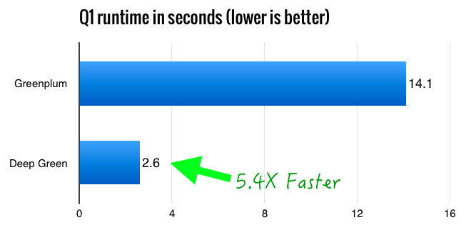
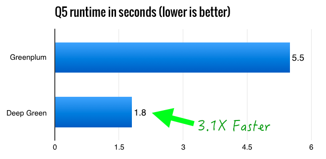

Vitesse Deepgreen DB is a scalable MPP data warehouse solution derived from the open source Greenplum Database Project. While maintaining 100% compatibility with the open source GPDB project, Deepgreen DB has a next-genaration query processor enhanced with (1) better join and aggregation algorithms, (2) new subsystem to handle spills, and (3) advanced techniques that maximize CPU performance through JIT-compiled query execution, vectorized scans, and data-path optimization.
All 22 queries of TPC-H are measured against Greenplum DB and Deepgreen DB. Q1 and Q5 are specifically graphed below for comparisons.
Q1: Scan and aggregate fact table
Q1 is a typical aggregate query running against the fact table.

SELECT lineitem.l_returnflag,
lineitem.l_linestatus,
sum(lineitem.l_quantity) AS sum_qty,
sum(lineitem.l_extendedprice) AS sum_base_price,
sum(lineitem.l_extendedprice * (1 - lineitem.l_discount)) AS sum_disc_price,
sum(lineitem.l_extendedprice * (1 - lineitem.l_discount) * (1 + lineitem.l_tax)) AS sum_charge,
avg(lineitem.l_quantity) AS avg_qty,
avg(lineitem.l_extendedprice) AS avg_price,
avg(lineitem.l_discount) AS avg_disc,
count(*) AS count_order
FROM lineitem
WHERE lineitem.l_shipdate <= ('1998-12-01'::date - '112 days'::interval)
GROUP BY lineitem.l_returnflag, lineitem.l_linestatus;
Q5: 6-way-join
Q5 is an aggregate over a snowflakey 6-way hashjoin that joins the fact table
lineitem table against the
orders and supplier tables, and
subsequently against other dimension tables.

SELECT nation.n_name,
sum(lineitem.l_extendedprice * (1 - lineitem.l_discount)) AS revenue
FROM customer, orders, lineitem, supplier, nation, region
WHERE customer.c_custkey = orders.o_custkey
AND lineitem.l_orderkey = orders.o_orderkey
AND lineitem.l_suppkey = supplier.s_suppkey
AND customer.c_nationkey = supplier.s_nationkey
AND supplier.s_nationkey = nation.n_nationkey
AND nation.n_regionkey = region.r_regionkey
AND region.r_name = 'AMERICA'
AND orders.o_orderdate >= '1994-01-01'
AND orders.o_orderdate < ('1994-01-01'::date + '1 year'::interval)
GROUP BY nation.n_name;
Raw result: Greenplum DB vs Deepgreen DB using Heap Tables
Q GPDB Deepgreen Speedup 1 14.1 2.6 5.4 2 2.1 0.7 2.8 3 6.0 1.9 3.1 4 5.4 1.8 3.0 5 5.5 1.8 3.1 6 3.7 0.8 4.6 7 14.3 11.0 1.3 8 5.8 1.6 3.6 9 13.4 6.6 2.0 10 7.0 3.5 2.0 11 2.2 1.4 1.6 12 5.4 1.7 3.2 13 5.5 4.8 1.2 14 3.6 1.0 3.5 15 7.0 2.1 3.3 16 1.5 1.0 1.5 17 29.6 16.2 1.8 18 16.1 7.0 2.3 19 4.0 1.9 2.1 20 9.2 7.1 1.3 21 18.8 8.0 2.4 22 7.8 4.9 1.6